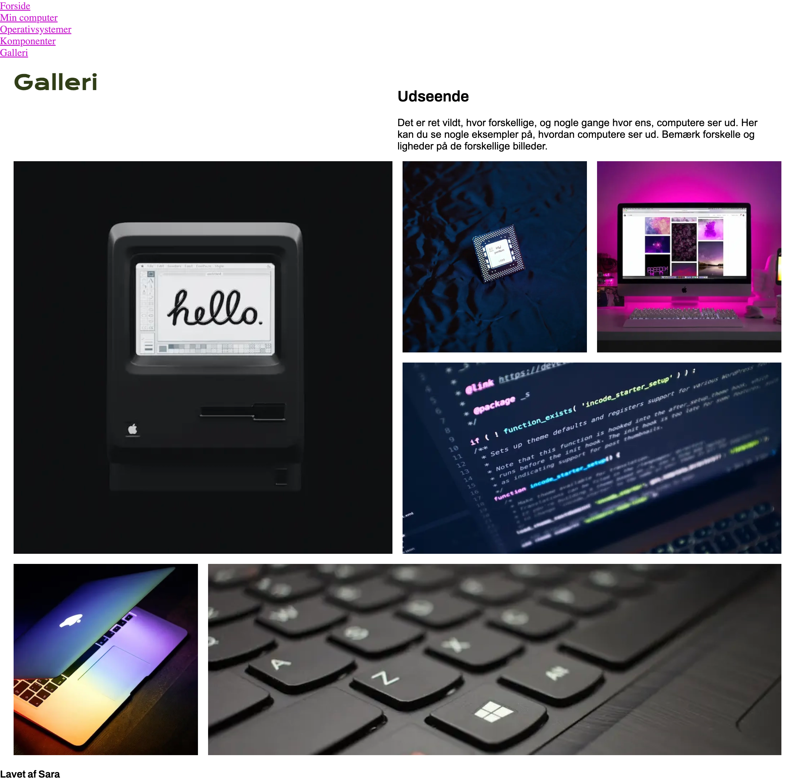

02
I Tema 2 fik en dybdegående og grundlæggende introduktion til multimediedesigner-faget. Vi gik igennem hvordan man med de mest basale redskaber sætter et website op med HTML og CSS. HTML er det som bestemmer strukturen samt indholdet (her definerer man hvad man gerne vil have med elementer på sit website fx links, tekst, billeder, logo osv.) Til det bruger man tags. Tags kan f eks hedde <head>, <body>,<h1>, <p>... og så ender man med en rå hjemmeside. CSS derimod er det som fastlægger layoutet samt udseende.Dette gør man ved at vælge et specifik element i HTMLen og giver det en specifik værdi. F.eks kan jeg give <h1> en farve ved at skrive: h1 { color: red;}. HTML og CSS er uadskillelige, man kan ikke lave HTML uden at lave CSS, eller omvendt.
Vi blev introduceret til Figma/FigJam og hvordan man nemt kan arbejde både alene og sammen i disse programmer. Disse programmer og færdigheder har vi brugt til hvert tema sidenhen og har været rigtig gavnlige i forarbejdet når man udvikler websites. En basal færdighed at mestre i multimediedesign-verdenen er filstruktur. Det er meget vigtigt at have orden i sine mapper, filer osv for at kunne optimere sit "workflow".
I design undervisningen startede vi ud med at læse et par kapitler i bogen. Vi læste blandt andet kapitlet “Æstetik”, som kom omkring gestaltlovene, visuelt hierarki, typografi, farvelære (bl.a farvecirklen, kontraster, relativitet, RGB-farver og menneskers oplevelse af farver). Dette synes jeg var særlig spændende fordi det gik op for mig hvor fundamentalt det er for oplevelsen. “De fire stile” (Modernisme, postmodernisme, retro design og futurisme) og de underliggende stile, blev vi også undervist i. Vi kom også i gang med at snakke om komposition. Komposition (symmetri og asymmetri) er vigtigt når man bygger et website op, og at man gøre sig tanker om dette inden man begynder at kode. For layoutdiagrammer/“grid” er også en væsentlig del når man bygger sit website op.
Alt dette ledte op til "Studiestartsprøven", som var en opgave som netop havde fokus på grundlæggende web færdigheder. Min prøve endte med at se således ud:

